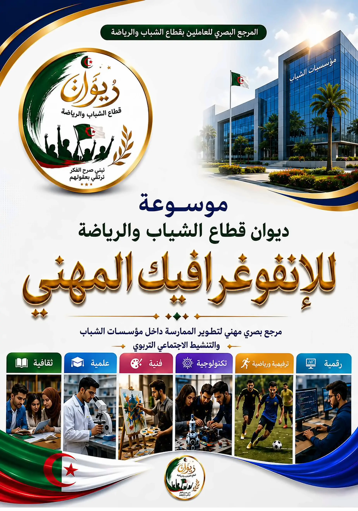

المرجع البصري للعاملين بقطاع الشباب والرياضة
موسوعة ديوان قطاع الشباب والرياضة للإنفوغرافيك المهني
مرجع بصري مهني لتطوير الممارسة داخل مؤسسات الشباب والتنشيط الاجتماعي التربوي، في أربع سلاسل و281 صفحة.
تعمل الموسوعة دون اتصال بالإنترنت، وتحفظ آخر صفحة قرأتها ومفضلتك على هذا الجهاز.

آخر ما قرأت
ابدأ حسب دورك
كل المساراتتصفّح حسب الموضوع
ثلاثة عشر موضوعاً وأكثرالسلاسل الأربع
اضغط على الغلاف لفتح السلسلةمفضلتي
مكتبتيالفهرس العام
ابحث بعنوان الصفحة أو بموضوعها أو برقمها، أو تنقّل بين السلاسل والمحاور.
معرض الصفحات
كل صفحات الموسوعة مصغّرة، اضغط على أي صفحة لفتحها.
مسارات القراءة
اختر دورك، فيرتّب لك البرنامج الصفحات الأهم بالتسلسل المناسب. تُحفظ نسبة تقدّمك في كل مسار.
مكتبتي
مفضلتك وملاحظاتك على الصفحات. تُحفظ على هذا الجهاز فقط، ويمكنك نسخها احتياطياً واستعادتها في جهاز آخر.
المفضلة
لم تضف أي صفحة إلى المفضلة بعد. افتح صفحة واضغط على النجمة (B).
ملاحظاتي
لا ملاحظات بعد. داخل أي صفحة افتح الدرج الجانبي (C) واختر «ملاحظاتي».
نسخة احتياطية
احفظ المفضلة والملاحظات وتقدّم المسارات في ملف، ثم استعده على جهاز آخر أو بعد تنظيف المتصفح.
حول الموسوعة
المرجع البصري للعاملين بقطاع الشباب والرياضة — ديوان قطاع الشباب والرياضة.
ما هذه الموسوعة؟
مرجع بصري مهني لتطوير الممارسة داخل مؤسسات الشباب والتنشيط الاجتماعي التربوي، في أربع سلاسل: الإطار القانوني والتنظيمي، والبرنامج التربوي وهندسة المشاريع، والنوادي التربوية، والتنشيط الاجتماعي التربوي.
كيف أستفيد منها؟
- المسارات: اختر دورك (منشط، مدير، مفتش…) واقرأ الصفحات الأهم بالترتيب.
- البحث والفهرس: ابحث بعنوان الصفحة أو موضوعها أو برقمها.
- المواضيع: تصفّح الصفحات عبر مواضيع مشتركة تعبر السلاسل الأربع.
- مكتبتي: احفظ المفضلة وسجّل ملاحظاتك على أي صفحة.
- الطباعة: اختر صفحات (مثلاً «20-31, 45») واطبعها أو احفظها ملف PDF لتوزيعها في ورشة أو اجتماع.
وضوح الصفحات والدقة العالية
الصفحات في هذا البرنامج نسخ محسّنة بدقة مضاعفة لتظهر أنقى عند التكبير. إن توفرت لديك الصور الأصلية بدقة أعلى، ضعها في مجلد hd بجانب index.html بالأسماء 001 … 281 (jpg أو png أو webp)، فيستعملها البرنامج تلقائياً دون أي تعديل.
التثبيت والاستخدام دون إنترنت
يعمل البرنامج مباشرة من الملف index.html دون اتصال. وإذا نُشر على موقع، يمكن تثبيته من المتصفح كتطبيق على الهاتف أو الحاسوب.
حفظ كل الصفحات على جهازك
يحمّل هذا الزر الصفحات الـ 281 مرة واحدة ليعمل البرنامج بعدها دون إنترنت حتى بعد إغلاق المتصفح.
نبني صرح الفكر، نرتقي بعقولهم
الأدوات التفاعلية
نماذج قابلة للتعبئة مبنية على أدوات الموسوعة الفعلية. تُحفظ تعبئتك تلقائياً على هذا الجهاز، وتقدر تطبعها أو تصدّرها نصياً في أي وقت.
قاموس المصطلحات المهنية
شرح توضيحي عام لمفاهيم متداولة في العمل الشبابي والتنشيط التربوي، وليس نصاً رسمياً عن الديوان.
حقيبة التكوين
مواد مقترحة من إعدادنا لاستعمال الموسوعة في ورشات التكوين، وليست برنامجاً رسمياً معتمداً.